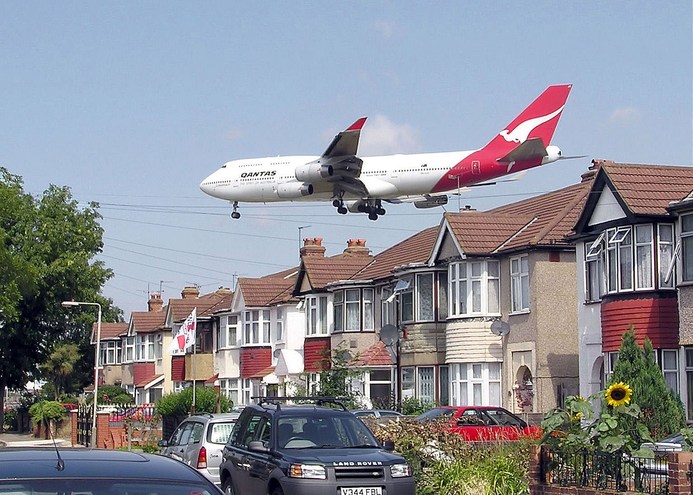

Air pollution prevention and solution:
Solution efforts on pollution is always a big problem. This is why prevention interventions are always a better way of controlling air pollution. These prevention methods can either come from government (laws) or by individual actions. In many big cities, monitoring equipment have been installed at many points in the city. Authorities read them regularly to check the quality of air. Let's see more below:
Government (or community) level prevention
 Governments throughout the world have already taken action against air pollution by introducing green energy. Some governments are investing in wind energy and solar energy, as well as other renewable energy, to minimize burning of fossil fuels, which cause heavy air pollution.
Governments throughout the world have already taken action against air pollution by introducing green energy. Some governments are investing in wind energy and solar energy, as well as other renewable energy, to minimize burning of fossil fuels, which cause heavy air pollution.
Governments are also forcing companies to be more responsible with their manufacturing activities, so that even though they still cause pollution, they are a lot controlled.
Car manufacturing companies are also building more energy efficient cars, which pollute less than before.
Individual Level Prevention
Encourage your family to use the bus, train or bike when commuting. If we all do this, there will be less cars on road and less fumes.

Use energy (light, water, boiler, kettle and fire woods) wisely. This is because lots of fossil fuels are burned to generate electricity, and so if we can cut down the use, we will also cut down the amount of pollution we create.
Recycle and re-use things. This will minimize the dependence of producing new things. Remember manufacturing industries create a lot of pollution, so if we can re-use things like shopping plastic bags, clothing, paper and bottles, it can help.